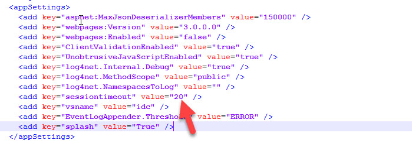

Applies To
Directory Manager 10 – Self-Service and Password Center portals
Overview
By default, a session in the Self-Service or Password Center portal ends after 20 minutes of inactivity. When this occurs, users are redirected to the Login page and must re-enter their credentials to continue. You can adjust the session timeout value to balance convenience and security. Increasing the timeout makes it easier for users to stay logged in, but may reduce security. Decreasing the timeout enhances security, but may require users to log in more frequently.
Instructions
You can change the sessiontimeout value key in the web.config file of a portal. If you have multiple portals, remember to change the value in each portal's respective web.config file.
The file is available at the following locations for the respective portals:
Self-Service Portal
C:\Program Files\Imanami\<Directory Manager
10.0>\SelfService\Inetpub\<portal_name>\Web
|
Password Center User Portal
C:\Program Files\Imanami\<Directory Manager
10.0>\PasswordCenter\Inetpub\<portal_name>\Web
|
Password Center HelpDesk Portal
C:\Program Files\Imanami\<Directory Manager
10.0>\PasswordCenter\HelpDesk\Inetpub\<portal_name>\Web
|
- Open the web.config file with a text editor.
-
Search for
<appSettings>and look for the following line:<add key="sessiontimeout" value="20" /> - Set the value in minutes as needed. If the key does not exist, add the line and save the changes.
